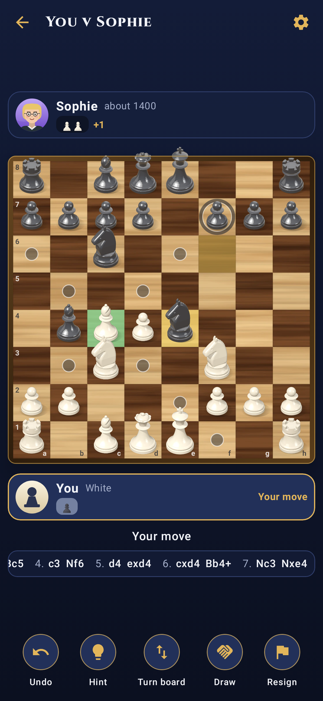
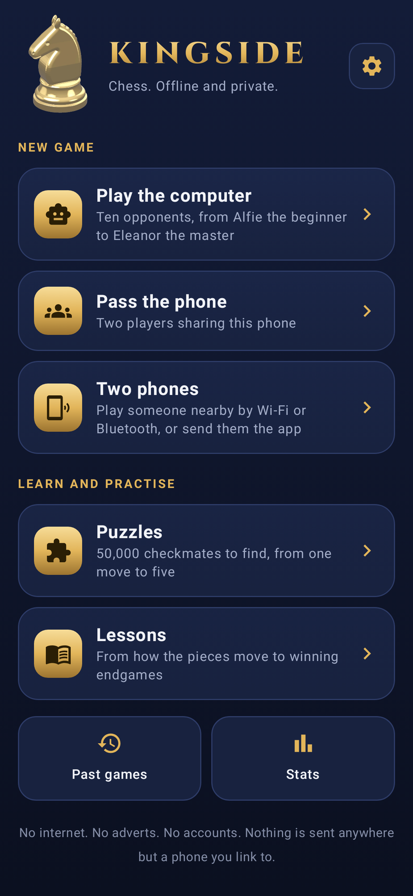
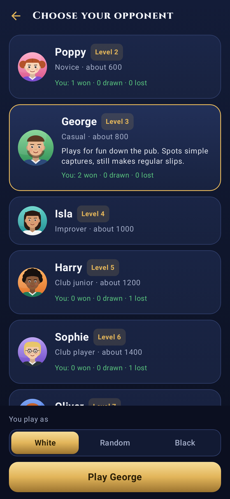
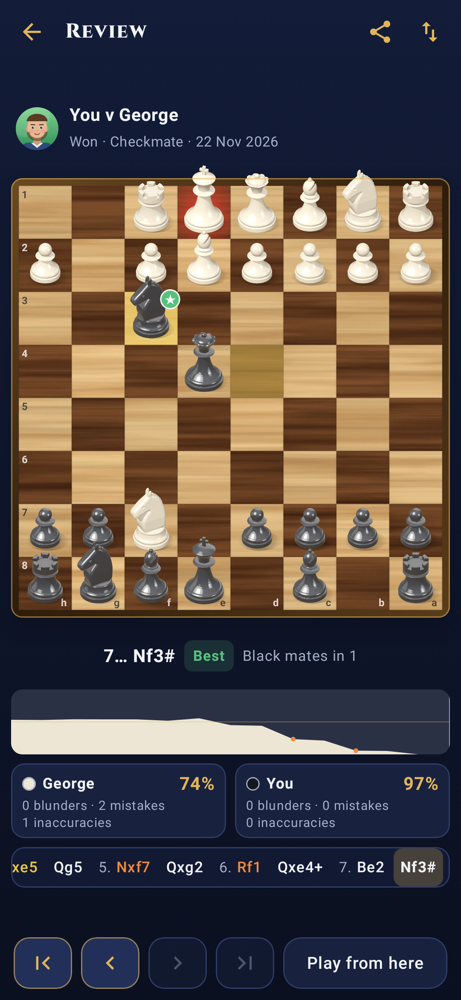
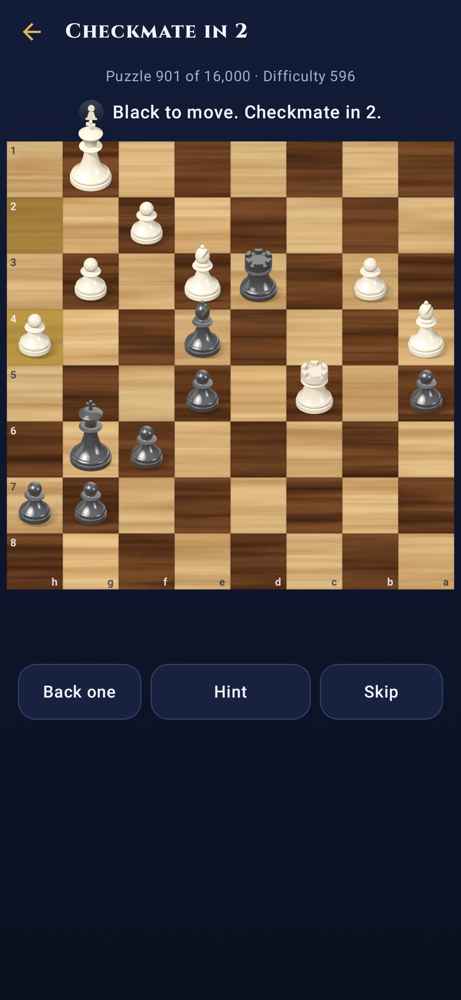
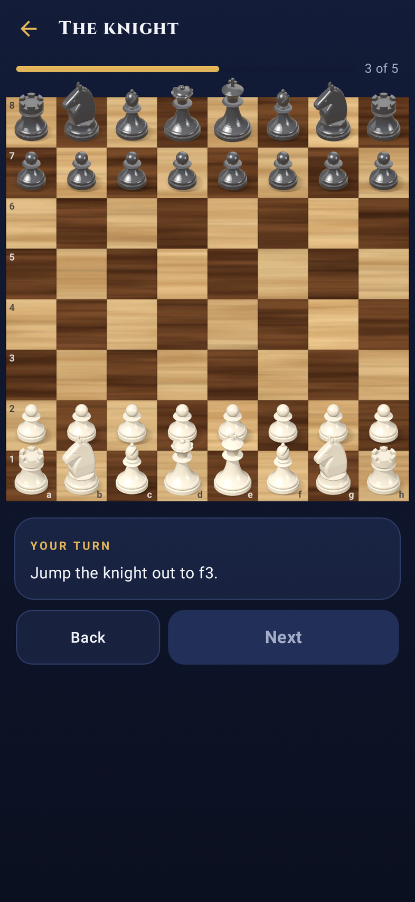
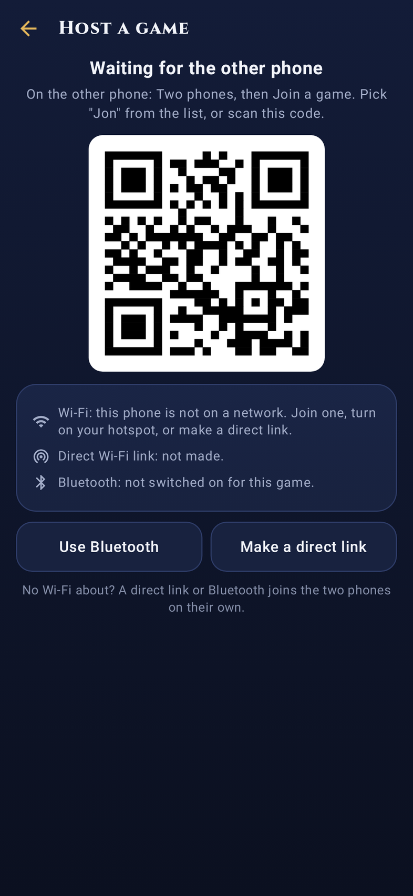
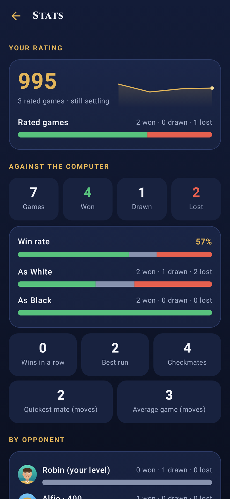

Chess, and nothing else.
Kingside is chess for Android that never goes online. Play ten computer opponents with names and faces, from Alfie the beginner to Eleanor the master, on boards and pieces drawn for the app.
Pass one phone between two players, or link two phones by Wi-Fi or Bluetooth with no internet. Then sharpen up with 50,000 checkmate puzzles, 28 lessons and a review of every game you finish.
Download for AndroidHow to install
- Version 1.0.0
- Android 8 or later
- 5.0 MB
Free, with nothing to unlock. No adverts, no account with the developer, no tracking. Compare or read the release notes.
Chrome may say the file might be harmful. It shows this for app files that do not come from Google Play. Choose Download anyway.

- No advertsNone in the app and none on this site.
- Nothing to buyEvery opponent, puzzle and lesson is free.
- Works offlineIt never contacts the internet.
- No accountNothing to sign up for.
A look inside
These are the real screens, drawn from the app's own code with made-up games. Swipe or scroll sideways to see them all.







How it works
Everything chess needs is inside the app: the rules, the computer players, the puzzles and lessons, and the link between phones.
Choose who to play
Pick one of ten computer opponents, or Robin who matches your level. Share one phone with a friend, or link two phones.
Play your game
Tap or drag the pieces. Legal moves are marked, and if a move is not allowed Kingside says why. Ask for a hint and it explains its idea in plain words.
Look back and learn
Every finished game is kept. Review it to see where it turned, then practise with checkmate puzzles and short lessons.
Everything is in, and all of it is free
Nothing below is held back for a paid tier, because there is no paid tier.
The game
- Every rule, checked
- Castling, en passant, promotion, check, checkmate, stalemate, threefold repetition, the fifty-move rule and dead positions. The rules were checked against 14 million moves from real games.
- Boards and pieces
- Four 3D piece sets and a flat one, five boards, smooth moves, capture effects and a toppling king at checkmate. Effects can be reduced or switched off.
- Help when you want it
- Hints that explain themselves, undo, and a plain reason whenever a move is not allowed.
Computer opponents
- Ten with names and faces
- Alfie, Poppy, George, Isla, Harry, Sophie, Oliver, Charlotte, William and Eleanor, from about 400 to about 2400. The ratings are estimates.
- Robin plays at your level
- An eleventh opponent who gets stronger each time you win and eases off when you lose.
- Its own chess engine
- The computer player was written for Kingside and runs on the phone. It needs no internet.
Two players
- Pass the phone
- Two players on one phone, with the board fixed, turning each move, or laid out for players sitting opposite each other.
- Two phones, no internet
- Link by the same Wi-Fi, a hotspot, a direct Wi-Fi link or Bluetooth. Draw offers, take-backs and rematches are agreed between the phones.
- A dropped link is not the end
- If the phones lose touch the clocks stop, and the game carries on from the same move when the link comes back, even after closing the app.
Learn and practise
- 50,000 checkmate puzzles
- Mate in one to mate in five, taken from real games and sorted from easiest to hardest, with a daily puzzle, a streak and a three-minute rush.
- 28 lessons
- From how each piece moves to tactics, opening principles and endgames. In 48 steps you make the move yourself on the board.
- Game review
- Step through any finished game with a graph of who was winning, accuracy for each side and a label on every move from Best to Blunder.
Extras you can switch on
- Clocks and rated games
- Seven time limits or your own, a two-button clock for a real board, and your own rating that moves with rated results.
- Chess960, a board editor and opening names
- Shuffled starting positions, any position set up and played from, and the name of the opening shown as you play.
- Easier to see and hear
- Colour-blind friendly highlights, larger text, and moves written out in words, with support for the phone's screen reader.
Your games stay with you
No servers
There are no accounts and no servers. Two linked phones talk only to each other.
No ads, no tracking
There is no advertising, analytics or tracking, in the app or on this site.
Never online
Kingside contains nothing that contacts an internet address. The website links in Settings open in your browser.
Installing and updating
Kingside is not on Google Play, so your phone asks a couple of extra questions the first time.
Download the app file
Tap Download on your phone. The file is called Kingside.apk and is about 5.0 MB. If Chrome says the file might be harmful, choose Download anyway.
Allow the install
Open the file. The first time, Android asks you to allow your browser to install apps. Allow it, go back and tap Install. If Google Play Protect steps in, choose More details, then Install anyway.
Updating later
Kingside never goes online, so it cannot tell you about new versions by itself. In Settings, About, the button "Newer version?" opens the release notes page in your browser. Install the new file over the old one and your games, stats and settings are kept.
Version 1.0.0, released 22 November 2026. See the release notes, or check your download.
Questions
Is Kingside really free?
Yes. There is no paid version, no subscription and no adverts, and nothing in the app is locked. Every opponent, puzzle, lesson, board and piece set is there from the start.
Is it on Google Play?
No. Kingside is a personal project and is downloaded from this site as an Android app file. It needs Android 8 or later, which covers almost every phone made since 2017.
Does it need the internet?
No, never. Kingside does not go online at all. Against the computer, passing the phone, puzzles, lessons and review all work with no connection, and two phones link directly to each other.
How strong is the computer?
The ten opponents run from about 400 to about 2400. Those numbers are estimates, not official ratings. The weakest make beginner mistakes on purpose, and the strongest thinks for about three seconds a move.
How do two phones link?
Both phones need Kingside. One taps Two phones, then Host a game; the other taps Join a game. On the same Wi-Fi or hotspot the host shows up in a list. With no Wi-Fi, the host can make a direct link and show a code to scan, or both can use Bluetooth.
Does it work in flight mode?
Yes. Flight mode switches Wi-Fi and Bluetooth off, but most phones let you switch them back on while staying in flight mode. Follow the cabin crew's instructions.
Why does it ask for nearby devices, location or the camera?
Only for Two phones. Android needs the nearby devices permission to find another phone by Bluetooth or a direct Wi-Fi link; on Android 12 and older that permission is called Location, though Kingside never reads where you are. The camera is used only to scan the host's code. Each is asked for when first needed, and everything else works if you say no.
What happens if the link drops in the middle of a game?
Both phones say so, the clocks stop and nobody can move. The joining phone keeps trying, and the game carries on by itself. If the app was closed, open the game from Continue games and link again.
How do I get Kingside onto a friend's phone?
In Two phones, tap Send Kingside to a friend. Send the app file by Quick Share or Bluetooth, or show a code that your friend scans with their camera to download it straight from your phone over Wi-Fi or a hotspot.
Where do the puzzles come from?
From the open puzzle collection published by lichess.org, which is in the public domain. Every one of the 50,000 in Kingside is a forced checkmate from a real game, and each was checked again with Kingside's own rules.
Can I bring in games from other chess apps?
Yes. Games saved as PGN, the plain text format other chess apps and websites use, can be pasted in or opened from a file, then replayed and reviewed. Your own games can be copied or shared the same way.
Does it work on an iPhone?
No. Kingside is for Android phones and tablets only.
Who made it?
Kingside is made by Jonathan Jackson, an independent developer in the United Kingdom.
Your move
Free, with no adverts and nothing to unlock. Made by the developer of several other free Android apps: see them all.